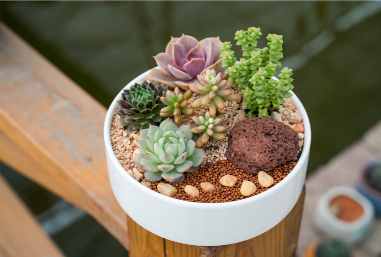

Projeto
PROJETO CRIADO COM INTUITO DE DEMONSTRAR AS HABLIDADES ADQUIRIDAS DURANTE O CURSO DE DESING PARA WEB DO SENAC, JUNTAMENTE COM OS MARAVILHOSOS PROFESSORES EDUARDO, MIRELA, PRISCILA, AURORA, MARIA PIA E FELIPE. EM MEIO AS DÚVIDAS DE CONTEÚDO DECIDI HOMENAGEAR O MEU TIO, ARMANDO JR, QUE CUIDA DAS SUAS SUCULENTAS MESMA FORMA QUE SEMPRE CUIDOU DE MIM, COM MUITO AMOR E ATENÇÃO.